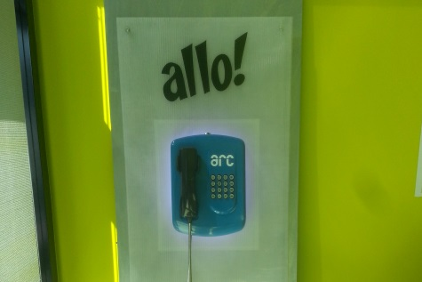

Gestion'air

Prochaine session
{{e.dates}}
{{e.name}}
{{e.location}}
Des questions?
Contactez-nous:
Secrétariat
+ 41 32 930 20 20
gestion@he-arc.ch
Facebook HE-Arc
Facebook Ingénierie
Youtube HE-Arc
Youtube Ingénierie
Intranet
Webmail
Formulaire de recherche
Rechercher
Annuaire...
HAUTE ECOLE ARC
Portrait
Formation Ra&D
La HE-Arc
Toutes les formations
Organisation
Ra&D
Emploi
Projets de recherche
Réglementation
Publications
Brochures
FabLab
Egalité des chances
Vie de l'école
Réseau
Campus pratique
Alumni
Sport
Arc Europe
Soutien aux étudiants
Communauté du savoir
Mobilité
Liens
Bibliothèques
Impressum
CONSERVATION-RESTAURATION
Contacts et organisation
Profession CR
Futur-e étudiant-e
Les métiers
Etudiant-e d'un jour
Les spécialisations
Témoignages
Admission
Recherche et services
Bachelor et Master
Projets Ra&D
Bachelor
Unité de recherche
Master
Prestations de service
Horaires
International
Swiss CRC
Alumni
Formation continue
Travaux de diplôme
Liste des cours
Equivalence des titres
Perspectives professionnelles
GESTION
Général
Bachelor
La HEG en bref
Droit économique
Contact
Economie d'entreprise
Agenda
Informatique de gestion
Presse
Etudiant-e-s
Master
Associations d'étudiant-e-s
EMBA
Bibliothèque
MAS en Marketing management
Centre de carrière
MAS en Lutte contre la criminalité économique
Forum HEG
Mobilité
MSc en Business Administration
Recherche appliquée
Formation continue
Institut du Management et des systèmes d'information (IMSI)
Certificats d'études avancées (CAS)
Formation grand public
Centres de compétences
Institut de Lutte contre la criminalité économique (ILCE)
Ecole romande de la Magistrature pénale (ERMP)
Ecole romande en Administration judiciaire (ERAJ)
Institut du Marketing horloger (IMH)
Institut du Management des villes et du territoire (IMVT)
INGENIERIE
Bachelor in industrial design engineering
Conception de systèmes mecaniques
Conception ergonomique et design
Bachelor en microtechniques
Ingénierie horlogère
Génie industriel
Microtechnologies et électronique
Bachelor en informatique
Développement logiciel et multimédia
Informatique industrielle et embarquée
Informatique industrielle et embarquée (formation trinationale)
Master et formations postgrades
Master of science HES-SO in engineering
Formations postgrades et continues
Entreprise
Général
Compétences
Positionnement stratégique
Collaboration et financement
Vision et mission
Prestations de services
Organisation
Partenariats
Histoire
Mobilité
SANTE
Portrait
Futur-e-s étudiant-e-s
Historique
Année Propédeutique Santé
Axes de développement
Bachelor en Soins infirmiers
Organisation
Formations continues
Contacts
Mobilité
Recherche et Services
Acteur de sa région
Fonctionnement
Philosophie
Prestations de services
Les projets
Professeur-e-s chercheur-e-s
Les partenaires
Publications
A ne pas manquer